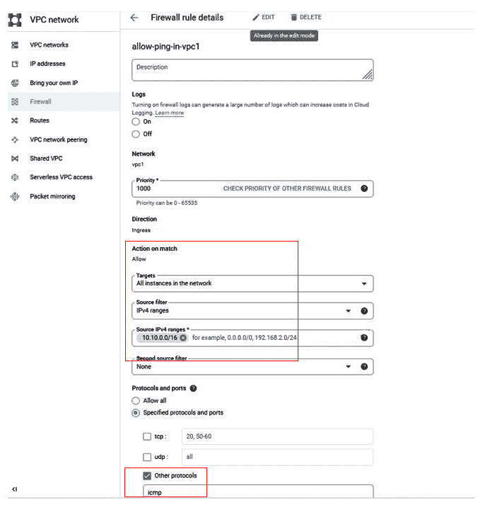
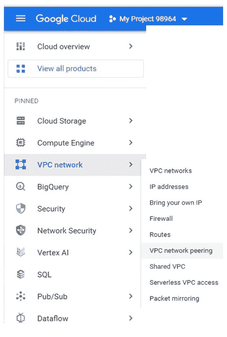

附录 1
使用基本 GCP 服务进行练习
在本附录中，我们将展示一些使用 Google Cloud console 和 Cloud Shell 的 GCP 资源供应示例。我们将使用以下架构来练习使用谷歌云控制台，如图图 11.1 所示:
- 一个 VPC 网络，VPC1，以及其中的两个子网:一个公有
subnet1和一个私有subnet2 - 具有外部 IP 地址并且可以从互联网访问的
subnet1 - 私有
subnet2中的虚拟机没有外部 IP 地址，因此只能从控制台浏览器或同一 VPC 中的虚拟机进行访问 - 另一个 VPC 网络 VPC2 和 VPC2 中的一个子网:一个私有
subnet8 - 私有虚拟机
subnet8 - VPC1 和 VPC2 之间的对等

图 11.1-GCP 控制台实践的示例架构
在图 11.1 中的 GCP 练习图中，public subnet1可从互联网上访问。有一个 Google 云存储桶叫做B1。如果我们想让 VM1、VM2 和 VM8 访问B1，我们需要做什么？在进一步阅读之前，这是一个值得思考的问题。
通过云控制台练习使用 GCP 服务
在 GCP，项目是资源提供的基本单位。你可以使用以下步骤开始一个项目:
- 在您从浏览器登录到 GCP 控制台(https://console.cloud.google.com)后，您将看到以下开始页面:

- 您可以通过点击我的第一个项目旁边的下拉按钮来创建新项目。

在我的第一个项目项目中，我们现在将创建网络 VPC、子网和虚拟机。
使用 GCP 控制台创建网络 VPC
- 在窗口的左上角，有一个导航下拉菜单，您可以使用它来选择 GCP 服务。

- 从左侧的导航菜单中，转到 VPC 网络并从下拉菜单中选择 VPC 网络。它会提示您启用计算引擎 API 。继续并启用它。
你将被带到 VPC 网络页面，在这里你可以创建一个 VPC 网络。
- 点击创建 VPC 网络。

然后，vpc1创建了两个子网:
- 重复步骤 3 和步骤 4 创建
vpc2:subnet8192.168.1.0/24europe-central2

现在已经创建了两个 VPC:带有两个子网的vpc1和带有一个子网的vpc2。
使用 GCP 控制台在 vpc1/subnet1 中创建公共虚拟机 vm1
- 从左侧的导航菜单，转到计算引擎，然后转到虚拟机实例。点击创建实例按钮。

然后，填写虚拟机实例的详细信息:
vm1us-east1us-east1-b- 机器配置 : 通用， N1 系列
f1-microsubnet1

- 选择其他选项的默认值，然后单击网络、磁盘、安全性、管理、单独租赁。


在这个时间，VM1 在vpc1和subnet1 ( 10.10.1.0/24创建，内部 IP 地址为10.10.1.2，外部 IP 地址为34.148.1.115。

要允许安全 Shell ( SSH )进入这个 Linux VM，您需要创建一个防火墙规则来允许入站 SSH 流量。
- 选择防火墙，然后创建防火墙规则。

- 填写防火墙规则详细信息:
vpc1-firewall-rule2vpc1

现在，您能够 SSH 到 VM 实例。
你现在有了一个 GCP 虚拟机，名为vm1，创建于vpc1的subnet1中。
使用 GCP 控制台在 vpc1/subnet2 中创建专用虚拟机 vm2
- 重复上一节中的步骤，在
vpc1/subnet2中创建一个虚拟机。唯一的变化如下:- 选择
asia-east1作为subnet2所在的区域。 - 选择
subnet2作为子网。 - 为外部 IPv4 地址选择无，因为这是一个私有虚拟机，没有分配外部 IP 地址。
- 选择
现在，vm2在vpc1/subnet2中被配置了10.10.2.2的 IP 地址。
- 重复中的步骤，使用 GCP 控制台在 vpc1/subnet1 内创建一个公共虚拟机 vm1，以创建一个防火墙规则，允许
vpc1(10.10.0.0/16)内的ping，这样vm1和vm2可以相互 ping 通，因为它们在同一个 vpc 中。
- 从
vm1平vm2(10.10.1.2)。
这时，你有了一个 GCP VM，vm2，在vpc1的subnet2中创建了，vm1可以 ping vm2。
使用 GCP 控制台在 vpc2/subnet8 内创建一个专用虚拟机 vm8
使用 GCP 控制台重复在 vpc1/subnet2 内创建私有虚拟机 vm2 中的步骤，在vpc2/subnet8 ( 192.168.1.0/24)中创建一个没有公共 IP 地址的虚拟机。唯一的变化如下:
- 选择
europe-central2作为subnet3所在的区域。 - 选择
subnet8作为子网。
注意vm1/vm2不能 ping vm8，即使你创建了允许从vpc1ping 到vpc2的防火墙规则，因为在vpc1和vpc2之间没有路由。这就是为什么我们需要在vpc1和vpc2之间创建对等关系。
使用 GCP 控制台在 vpc1 和 vpc2 之间创建对等关系
使用以下步骤在vpc1和vpc2之间创建 VPC 网络对等:
- 从导航菜单中，进入 VPC 网络，然后进入 VPC 网络对等。
- 从
vpc1到vpc2创建vpc12-peering。

- 来自
vm1的平vm8(192.168.1.2)。

你现在有了一个 GCP 虚拟机，在vpc2的subnet8中创建的vm8，并且vm1可以 ping vm8。
从 GCP 控制台创建 GCS 存储桶
- 从导航菜单中，转到云存储，然后转到存储桶。

- 在新窗口中，点击创建桶。


它会将您带到 bucket 页面，在这里您可以创建一个子文件夹、上传文件，或者在之前创建的 bucket 下上传一个文件夹。
到目前为止，我们已经从控制台配置了 GCP 资源(虚拟专用网络/子网、VPC 对等、虚拟机和存储)。所有这些供应都可以使用云外壳来完成。在下一节中，我们将提供用于 GCP 资源供应的云 Shell 命令/脚本。
使用谷歌云外壳提供 GCP 资源
我们可以使用谷歌云外壳来供应所有资源，而不是使用 GCP 控制台。在下面的示例中，GCP 架构如图图 11.2 所示，我们使用云 Shell 命令来配置 GCP 资源，包括网络 VPCs 子网、虚拟机和 VPC 对等。请在云壳中练习使用它们，并确保您理解每个步骤。

图 11.2–GCP 云外壳实践的示例架构
- 创建一个项目，VPC 和子网:
gcloud projects create test10122021 --folder 464105225938 gcloud compute networks create vpc1 --project corvel-032021 --subnet-mode=custom gcloud compute networks subnets create subnet11 --network=vpc1 --range=10.10.1.0/24 --project corvel-032021 --region us-west1 gcloud compute networks subnets create subnet12 --network=vpc1 --range=10.10.2.0/24 --project corvel-032021 --region us-east1 gcloud compute networks create vpc2 --project corvel-032021 --subnet-mode=custom gcloud compute networks subnets create subnet2 --network=vpc2 --range=192.168.1.0/24 --project corvel-032021 --region us-central1 gcloud compute networks create vpc3 --project test10122021 --subnet-mode=custom gcloud compute networks subnets create subnet3 --network=vpc3 --range=172.16.1.0/24 --project test10122021 --region us-central1
- 创建虚拟机:
gcloud compute instances create myvm11 --project corvel-032021 --machine-type=f1-micro --zone=us-west1-a --subnet=subnet11 gcloud compute instances create myvm12 --project corvel-032021 --machine-type=f1-micro --network-interface=subnet=subnet12,no-address --zone=us-east1-b gcloud compute instances create myvm2 --project corvel-032021 --machine-type=f1-micro --network-interface=subnet=subnet2,no-address --zone=us-central1-b gcloud compute instances create myvm3 --project test10122021 --machine-type=f1-micro --network-interface=subnet=subnet3,no-address --zone=us-central1-b
- 列出所有虚拟机并记下它们的 IP 地址:
gcloud compute instances list --project corvel-032021 gcloud compute instances list --project test10122021
- 打开
VPC1的防火墙:gcloud compute firewall-rules create fw1 --network vpc1 --allow tcp:22,icmp --source-ranges 0.0.0.0/0 --project corvel-032021
- 从控制台 SSH 到
myvm11，您应该能够从vm11pingvm12。 - 但是我们如何从
myvm11ping到myvm2？您需要来创建VPC1和VPC2(它们在同一个项目中)之间的 VPC 对等关系:gcloud compute networks peerings create peer12 --project=corvel-032021 --network=vpc1 --peer-project=corvel-032021 --peer-network=vpc2 gcloud compute networks peerings create peer21 --peer-project=corvel-032021 --network=vpc2 --project=corvel-032021 --peer-network=vpc1 gcloud compute networks peerings list --project=corvel-032021
- 为
vpc2:gcloud compute firewall-rules create fw2 --network vpc2 --allow tcp:22,icmp --source-ranges 0.0.0.0/0 --project corvel-032021
打开防火墙 - 现在你应该可以从
vm11pingvm2了。但是我们如何从myvm11ping 到myvm3？您需要在vpc1和vpc3(它们在不同的项目中)之间创建 VPC 对等关系:gcloud compute networks peerings create peer13 --project=corvel-032021 --network=vpc1 --peer-project=test10122021 --peer-network=vpc3 gcloud compute networks peerings create peer31 --project=test10122021 --network=vpc3 --peer-project=corvel-032021 --peer-network=vpc1 gcloud compute networks peerings list --project=corvel-032021
- 为
vpc3:gcloud compute firewall-rules create fw3 --network vpc3 --allow tcp:22,icmp --source-ranges 10.10.1.0/24 --project test10122021
打开防火墙
总结
在本附录中，我们提供了从 GCP 控制台供应 GCP 服务/资源的实践示例。我们还展示了如何使用 Google Cloud Shell 创建这些基本资源。